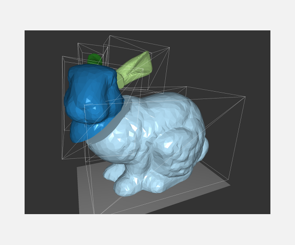

Fredrik Johnson
5th year M.Sc student
Linköping University
About
I'm currently at my 5th and final year studying for my Master of Science in Media Technology and Engineering at Linkoping University, Sweden. Since it's my last year I'm currently looking for a company where i can do my master thesis. During my time as a student I have developed strong skills in programming especially in C++ and C. I'm also competent in a various of topics such as Matlab, web development and image processing to name a few. My largest interest lies in visualization, both informational and scientific and computer graphics. To be able to visualize and make something hard to understand to a layman is something extremely difficult but exciting to do.
Education
Master of Science in Media Technology and Engineering
Linkoping University
5 Years, Masters Degree
Technology program with specialization in Mathematics, Programming and Virtual Design
Lindengymnasiet
3 Years, High School Degree
June 2011
Relevant Courses
Linköping University - Master of Science in Media Technology and Engineering
In addition to classes given at any engineering program regarding mathematics, program and physics; below is a selection of courses that shows my area of expertise
All full list of courses and grades can be provided upon request.
| Course code | Course Name | ECTS |
|---|---|---|
| TSBK03 | Advanced Game Programming | 6.0 |
| TNM095 | Artificial Intelligence for Interactive Media | 6.0 |
| TNM096 | Artificial Intelligence - Principles and Techniques | 6.0 |
| TNM031 | Network Programming and Security | 6.0 |
| TNM084 | Procedural Methods for Images | 6.0 |
| TNCG13 | SFX - Trics of the Trade | 6.0 |
| TNM034 | Advanced Image Processing | 6.0 |
| TNM061 | 3D Computer Graphics | 6.0 |
| Course code | Course Name | ECTS |
|---|---|---|
| TNM048 | Information Visualization | 6.0 |
| TNM067 | Scientific Visualization | 6.0 |
| TNM031 | Network Programming and Security | 6.0 |
| TDDD23 | Design and Programming of Computer Games | 6.0 |
| TDDD27 | Advanced Web Programming | 6.0 |
| TNM085 | Modelling Project | 6.0 |
| TDDB84 | Design Patterns | 6.0 |
| TNM082 | Agile Development for Handheld Devices | 12.0 |
Finished Projects
In no particular order
Real Time Voronoi Fracturing
A project done by myself and two students for the course TSBK03 - Techniques for Advanced Computer Games. The implementation is done using C++ and OpenGL, where the polygon meshes are stored utilizing the half-edge mesh data structure, which allows for effecient traversal of the mesh. The data structure comes in handy when triangulating the void created by the clipping of a mesh against a voronoi cell.
C++ OpenGL Computer Graphics Voronoi Fracturing
Report in swedishVideo
Dota 2 visualization

This is a visualization tool for Dota2 matches, created by another student and I. It's a web based tool implemented using the D3.js library. I primarily worked with how to extract data from Dota2 matches and then making it suitable for visualization. The data is extracted using a java based implementation for reading binary files created by the game
HTML Javascript D3.js Java Visualization
Report in englishTry a Demo
NaiN

Another student and I created an AI, for the course Artificial Intelligence for Interactive Media, that plays Super Mario Bros. levels neural networks and genetic algorithms. The implementation using the NEAT algorithm based on this report. The implementation was done using an emulator and manipulating the game with LUA.
LUA AI Neural Networks Genetic Algorithms
Report in englishGame of Domes

This was my bachelor theses where me and 6 other students developed a base for developing games played inside a dome.The implementation is done in c++ using the libraries SGCT, Bullet physics and OSG. SGCT is a toolkit that adds a lot of quality of life improvements when it comes to developing for a dome. My primarily focus during the program was core functionality and networking.
C++ OpenGL SGCT Bullet OSG Javascript HTML OpenGL
Report in swedishTube Wars

Tube Wars is a game created by me and 4 students for the course 3D Computer Graphics. The world and the core game was created using the game engine Unity 3D and the character creation and rigging where created using Mudbox, Cinema4D and 3DS Max. I was primarily working with game functionality and networking.
Unity3D C# Javascript
Panorama Sticher

As a final project in the course Image Processing and Image Analysis me and another student implemented a panorama sticher in MATLAB. Given 3 input images of a scene it will stich them together into a panorama picture, using the SIFT algorithm to find points and match the pictures together.
MATLAB Image Processing
Report in swedishQR reader

This project was done for the course Advanced Image Processing by another student and I, is a implementation of a QR-code reader done in MATLAB. The program takes a picture as input and will output the data a QR-code has. Our implementation manages to find and read a QR code in almost all different cases of noise, skewness, uneven brightness and rotation. During this project me and my partner did every part together.
MATLAB Image Processing
Report in swedishResolution of 2D Rigid Body Collisions

Is a project where me and 4 other students created a physical simulator of 2D rigid bodies. The implementation was done in C++ and OpenGL, It is able to handle circles and static rectangles using a 4th order Runge-Kutta numerical intergration. During this project I was working with implementing the physics used for the impulse reaction leading to updated linear and angular velocities.
C++ OpenGL Physics
Report in englishRoll Out The Barrel

Roll out the barrel is concept for a a puzzle game developed by me and another student. The game is created using Phaser.io which is a javascript based engine. I was mainly focusing on the functionalities of the game during its development. Below is a link to a screen cast that should not be taken all to serious.
HTML Javascript Phaser.io
Watch ScreencastTry The Game
Augmented Reality

In the course Agile devolpment for handheld devices me and 7 other students where tasked to create an app for android devices that would be used as a tool to assemble furniture, with the help of augmented reality. It is a implementation done in java and the augmented reality library metaio. It was done as a research projekt to help a company see the possiblities of Augmented Reality. I was primarily working with tracking and placing 3D objects in the world correctly.
An demo of the app can be given upon request.
Android Java Metaio
Ongoing Projects
Real Time Dynamic Fracture
In the course Advanced Game Programming me and two more studens are implementing a real time destruction of meshes which is based on this paper and video. The implementation will be done using C++ and OpenGL, basically we will atempt to destroy complex objects in a cool and fairly physical correct way.
Procedural Generation of Frost
I will implement a way of a procedurally producing frost on, hopefully arbitrary, objects in real time. This implementation will be done using C++, OpenGL and GLSL
DLL-injection
This is a project I'm doing for the course Network Programming and Security where I try out DLL-injection and its uses. I'm also researching about how to avoid it and how it can be used for good purposes such as debugging.It will be implemented using c++.
Artificial Intelligence playing NES
This is further delevopment of the NaiN project mentioned above. I will try to improve the learning rate and make it possible for the AI to play more games.
Plugin to maya for easy creation of lava
Another student and I will be creating a plugin for maya that will allow an artist to create realistic flowing lava with ease.